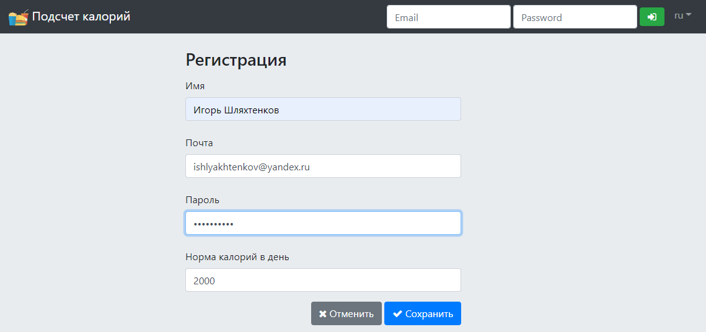

|
Maven Spring MVC Spring Security REST (Jackson) JPA (Hibernate) Spring Data JPA (Hibernate) Spring Data JDBC Ehcache JUnit 5 JSP JSTL jQuery + plugins DataTables Bootstrap 4 OpenAPI 2 |
Данное приложение позволяет пользователям вносить информацию об употребленной пище и количестве калорий,
которое она содержит, а также следить за превышением заданной ежедневной нормы потребляемых калорий.
Взаимодействие с приложением осуществляется через UI (по AJAX) и по REST интерфейсу с базовой авторизацией, имеется поддержка интернационализации (русский/английский языки).
В приложении используется два вида пользователей: авторизованные пользователи и администраторы. Анонимные пользователи могут зарегистрироваться, тем самым получая возможность работать с приложением.
Администраторы имеют все возможности авторизованных пользователей. Таже им доступна возможность просматривать информацию о пользователях приложения. Администраторы могут создавать новых пользователей, редактировать, блокировать и удалять уже имеющихся. Им доступна возможность изменять пароли пользователей, что удобно использовать, если пользователь не может вспомнить свой текущий пароль.
Любому авторизованному пользователю приложения доступна возможность просмотреть и изменить данные своего профиля, а также сменить пароль.